EXHIBITION LIGHTING · JEDDAH
Photographing
Distance
Lighting design for Matilde Marín’s exhibition at the Red Sea Museum in Al-Balad, Jeddah.
- My role
- Lighting design
- Artist
- Matilde Marín
- Venue
- Red Sea Museum
Jeddah, Saudi Arabia

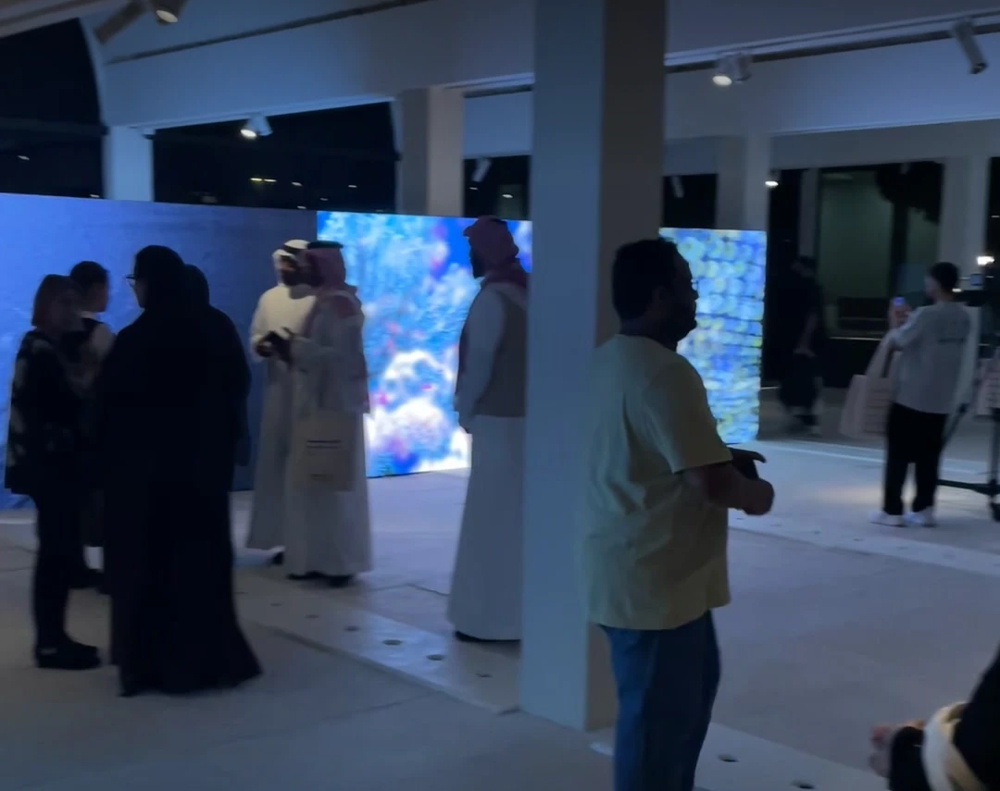
THE DESIGN QUESTION
Art, architecture
and moving light.
The room brings together photographs, LED displays and existing columns. The lighting approach had to respond to the artworks and to the surrounding space.
My work moved from a hand-drawn layout into on-site beam tests and focusing, considering the light from the LED walls alongside the exhibition lighting.
01 / READING THE SPACE
The room comes first.
The entrance arcade and gallery before the exhibition was complete.

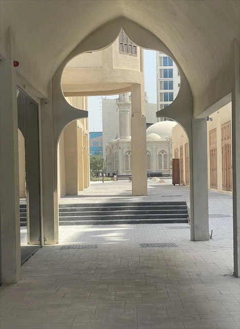

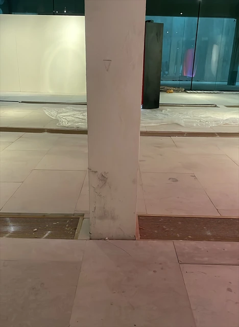
02 / PLAN & FOCUS
From paper to the beam.
Fixture positions and aiming directions were sketched around the columns, then tested in the room.

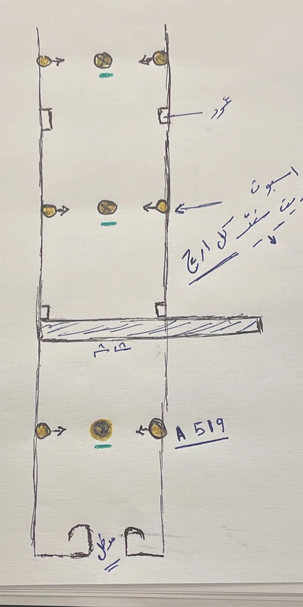

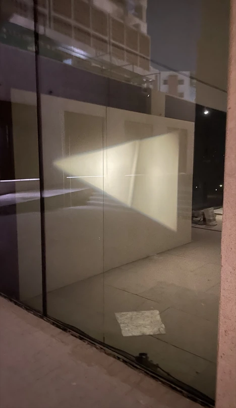
03 / THE EXHIBITION
One space, several sources of light.
The project documentation records the LED walls during installation and the gallery with visitors.

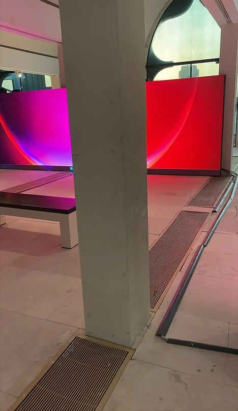
DISPLAYED EXHIBITION CREDIT
Lighting Design
Kareem Khaled Eid
The exhibition’s credits wall records my role in English and Arabic.

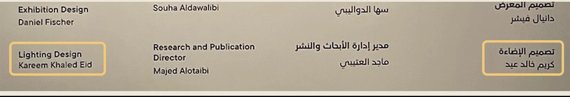
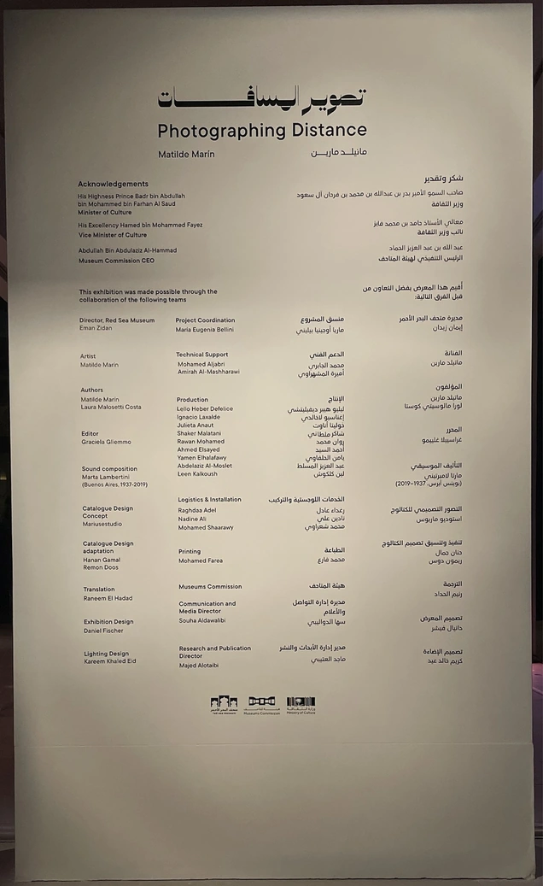
Original project boards
The original presentation, including venue photographs, the project team and acknowledgements.

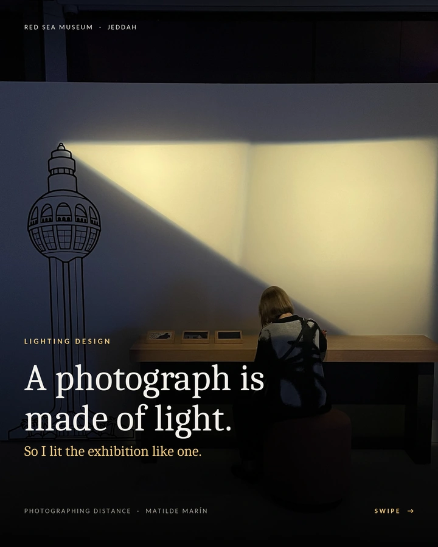

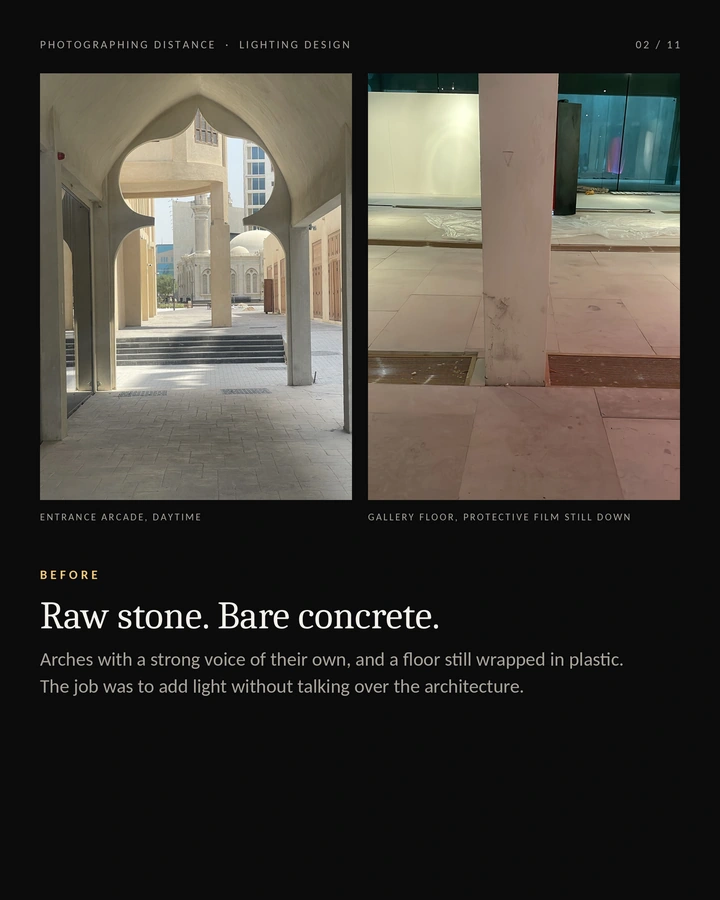

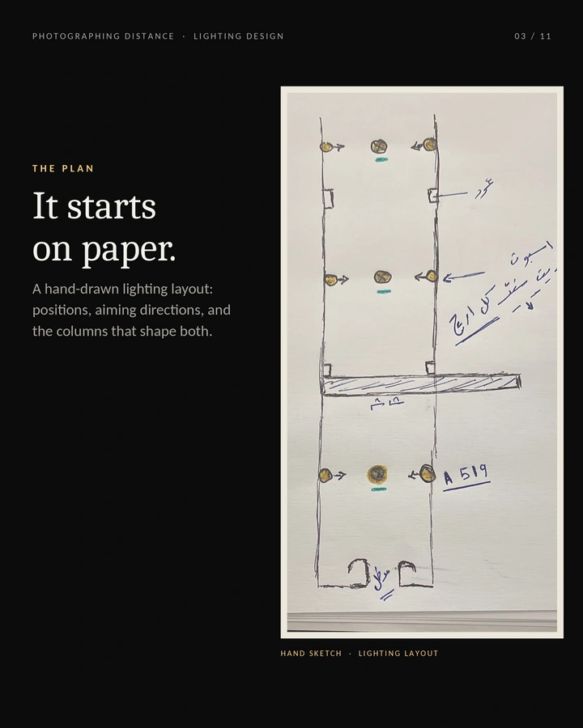

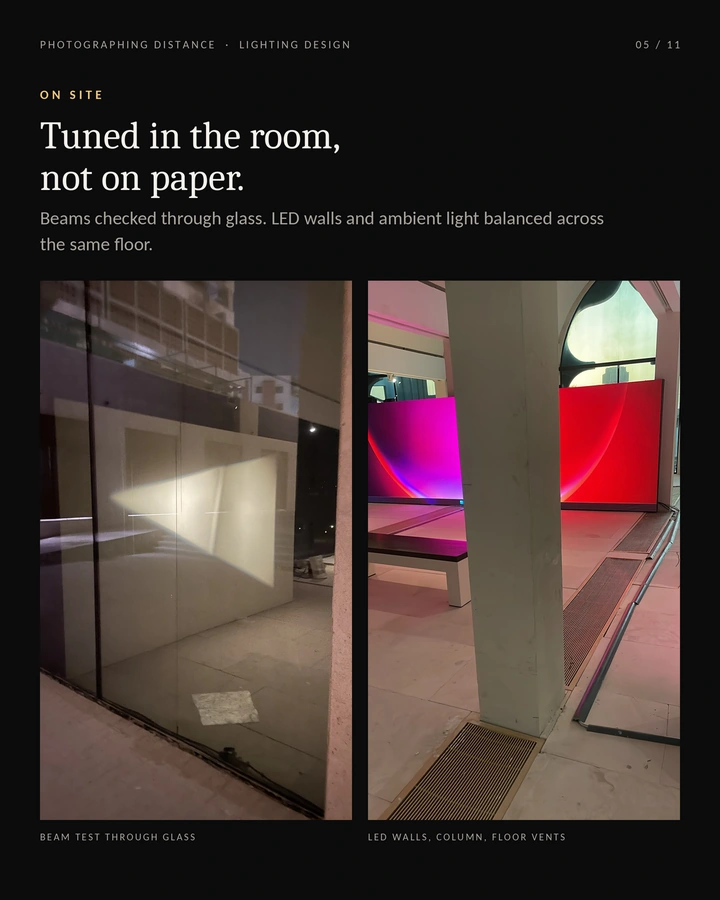

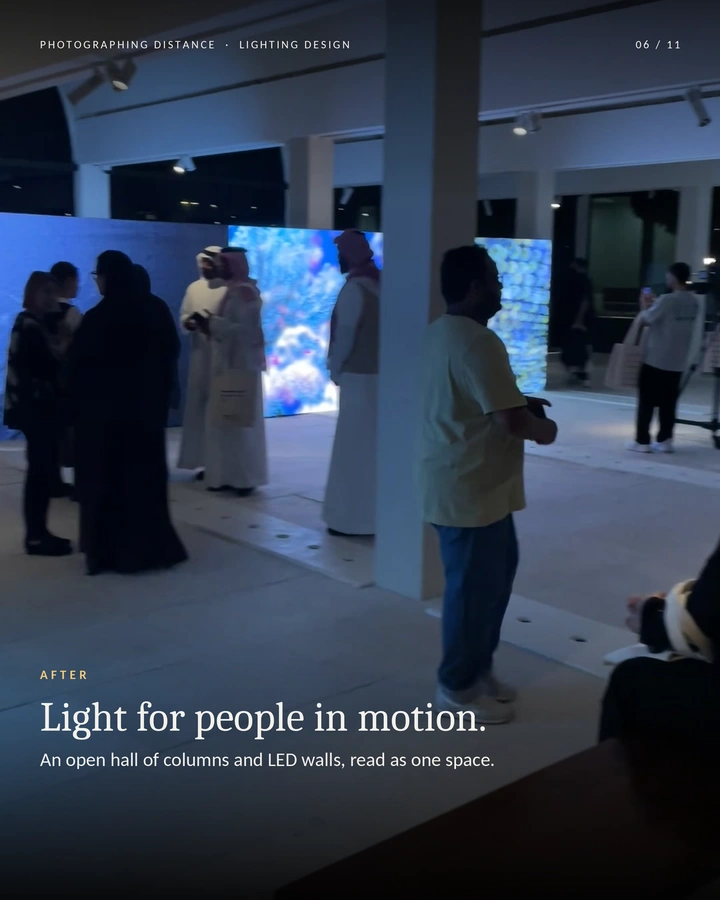

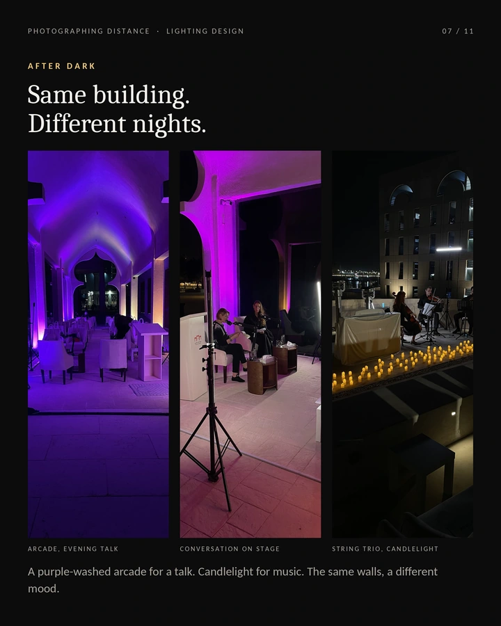

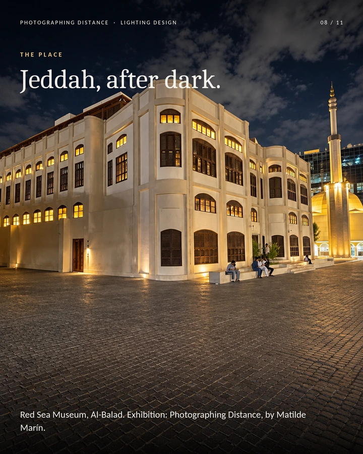

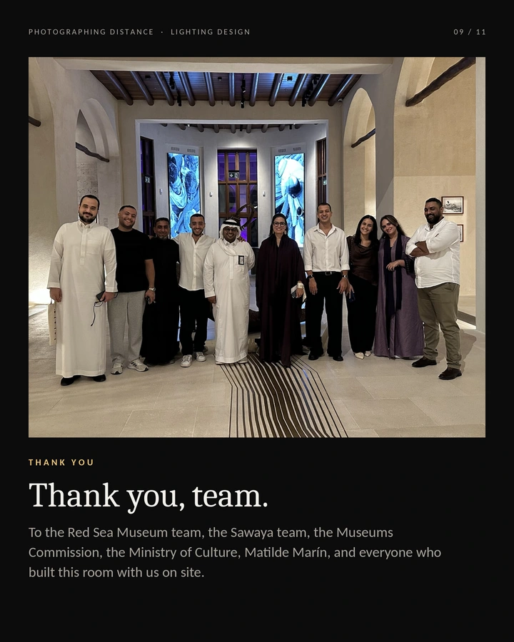

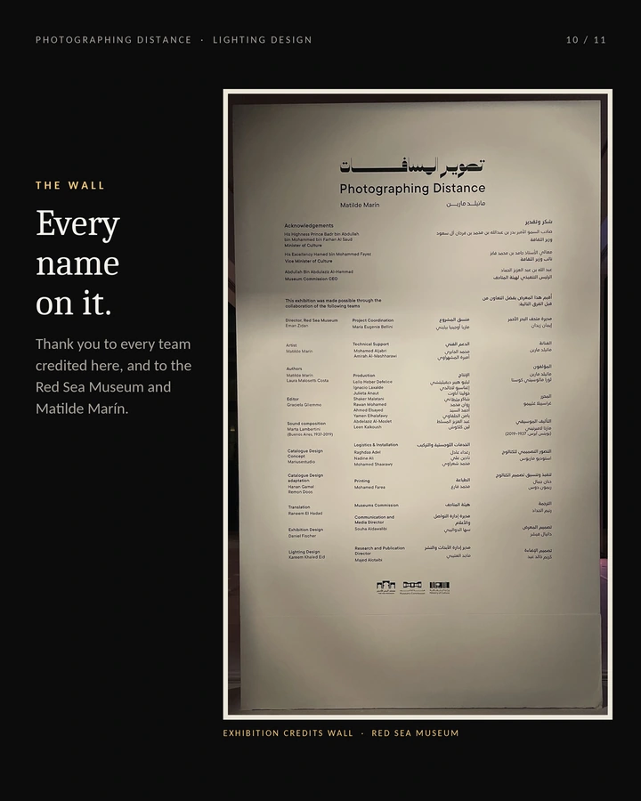

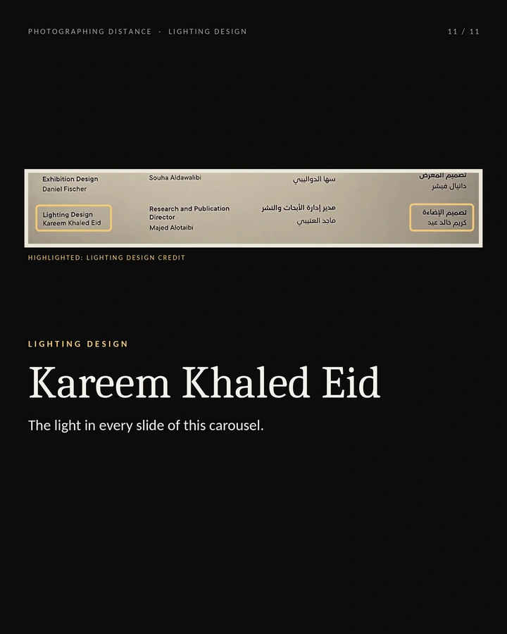
START A CONVERSATION
Bring your next
space to light.
Share the venue, project scope and timetable.